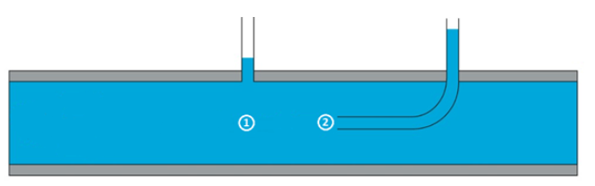
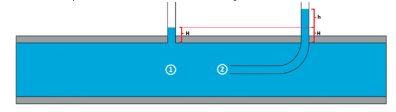

En la animación inferior se muestra un tubo de Pitot de un avión y la relación que existe entre su velocidad y la altura del segundo tubo.
Esta relación está explicada por la ecuación de Bernoulli:
$$ {P_1 \over \rho \cdot g} + z_1 + {V_1^2 \over 2g} = {P_2 \over \rho \cdot g} + z_2 + {V_2^2 \over 2g } $$
La ecuación en este caso, significa que en dos puntos distintos (1 y 2) de un escurrimiento, la energía total se mantiene constante,
esta energía consiste en la energía potencial debido a la altura(z), la velocidad del flujo (v) y la presión (P).
Se toman los puntos (1) y (2) de acuerdo a la siguiente figura:
En el punto (1) y (2) la altura z es la misma, mientras que en el punto (2) la velocidad del flujo es 0, por lo que la ecuación se reduce a:
$$ {P_1 \over \rho \cdot g} + {V_1^2 \over 2g} = {P_2 \over \rho \cdot g} $$
Para obtener las presiones en (1) y (2) se mide la altura del fluido en los respectivos tubos, de acuerdo a la figura:
Se calcula la presión hidroestática en ambos puntos:
Presión hidroestática:
En punto (1):
Con lo que la ecuación queda:
$$ H + {V_1^2 \over 2g} = H + h $$
$$ {V_1^2 \over 2g} = h $$
Es en esta expresión donde podemos ver que el aumento en la altura de la medición se debe a la energía cinética en el punto 2 del fluido.
Esta energía se transforma a presión al recorrer el tubo y causa que el fluido se eleve en h . Finalmente, despejamos \(v_1\):
$$ V_1 = \sqrt{2gh} $$
Cómo se puede observar el cálculo de la velocidad no depende de la densidad del fluido ni de su peso específico,
sólo de la altura h del tubo (2).
Este instrumento es muy importante en aviación para calcular la velocidad de los aviones respecto del aire.